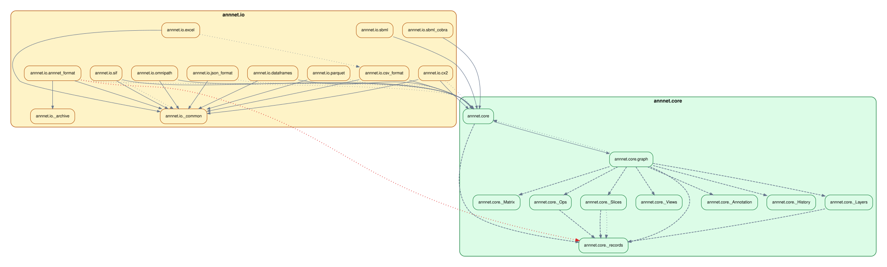
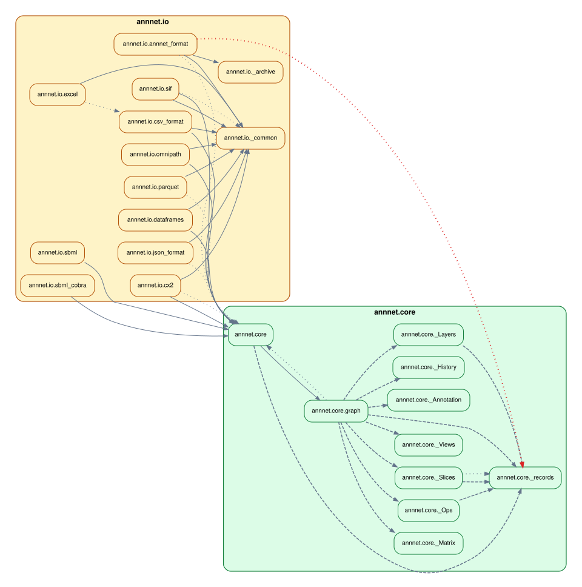

Configuration
importscope can run with no config, but most useful repo analyses end up
using an .importscope.yml.
The important change is that you no longer need to start by hand-editing YAML. The normal workflow is:
Manual YAML is still useful for advanced cases, but it should be the escape hatch, not the first step.
Start small
Create a compact starter config:
If you want to inspect it before writing:
Typical output after init:
tool:
default_profile: overview
discovery:
exclude:
- .venv/**
- venv/**
- .tox/**
- build/**
- dist/**
- .git/**
policy:
enabled: false
That is intentionally small:
- one default profile
- a few standard excludes
- policy mode off
- no hand-authored colors or display groups
Edit the config with commands
For common changes, use importscope config instead of editing YAML directly.
Examples:
importscope config package set mypackage
importscope config exclude add 'docs/**' 'tests/**'
importscope config include add 'mypackage/**'
importscope config policy enable
importscope config module-group-depth set 3
importscope config forbid add mypackage.domain mypackage.persistence
importscope config allowed-private add mypackage._
importscope config show
The matching remove and unset operations are available too:
importscope config package unset
importscope config exclude remove 'tests/**'
importscope config include remove 'mypackage/**'
importscope config policy disable
importscope config module-group-depth unset
importscope config forbid remove mypackage.domain mypackage.persistence
importscope config allowed-private remove mypackage._
If you want to see the merged config with built-in defaults:
Demo repo example
On the demo repo from the quickstart, these commands produce the checked-in config used in the docs:
importscope init
importscope config package set demo_shop
importscope config exclude add 'docs/**' 'tests/**'
importscope config policy enable
importscope config module-group-depth set 3
importscope config forbid add demo_shop.domain demo_shop.persistence
importscope config forbid add demo_shop.api demo_shop.persistence._
importscope config forbid add demo_shop.services demo_shop.persistence._
That yields:
tool:
default_profile: overview
discovery:
exclude:
- .venv/**
- venv/**
- .tox/**
- build/**
- dist/**
- .git/**
- docs/**
- tests/**
policy:
enabled: true
module_group_depth: 3
forbidden_imports:
- source_prefixes:
- demo_shop.domain
target_prefixes:
- demo_shop.persistence
- source_prefixes:
- demo_shop.api
target_prefixes:
- demo_shop.persistence._
- source_prefixes:
- demo_shop.services
target_prefixes:
- demo_shop.persistence._
package: demo_shop
What stays automatic
You do not need to assign colors up front.
If policy.display_groups is absent, importscope derives display groups from
the discovered package structure and assigns colors automatically. That means
init can stay focused on the more important decisions:
- what package or slice to analyze
- what to exclude or include
- whether policy mode is on
- which import directions are forbidden
Only add custom display_groups when the auto-derived grouping is not the view
you want to present.
What the main sections mean
package
Restrict analysis to one package namespace.
Example:
Use this when the repo contains several packages, support scripts, or a src/
layout where you want one package-focused graph.
discovery.include and discovery.exclude
Control which files are considered.
includenarrows scanning to a specific sliceexcluderemoves noise from discovery
In practice:
- use
excludefor most repos - use
includewhen the question is intentionally narrow
policy.enabled
Turn policy classification on or off.
With policy off, graphs stay structural. With policy on, importscope can mark:
- forbidden imports
- private imports
- boundary/helper cleanup candidates
CLI flags still override the YAML for one run:
policy.module_group_depth
Control how deep module-level clusters should split.
Examples:
2groupsomnipath._core.baseunderomnipath._core3groupsmypackage.adapters.sql.readerundermypackage.adapters.sql
Use this when one module-level graph still has a box that is too large to read.
policy.forbidden_imports
Declare architectural direction rules.
Example:
That means modules under mypackage.core should not import modules under
mypackage.api.
policy.allowed_private_target_prefixes
Allow private targets that are intentionally shared.
Example:
Use this sparingly when leading-underscore modules are intentionally internal but still part of the allowed architecture.
When YAML is still the right tool
The command layer covers the common setup path, but manual YAML is still useful for more advanced cases:
- custom
outputs.profiles - custom
outputs.tables - explicit
display_groups - explicit
policy_areas allowed_import_pairsboundary_helper_target_prefixesboundary_helper_symbols
Those are still legitimate, but they should come after the first structural or policy-aware run, not before it.
Graph layout overrides
If one graph family is structurally correct but visually harder to read, add a
per-graph layout block under the profile graph spec.
Example:
outputs:
profiles:
overview:
graphs:
- id: module-dependency
stem: module_dependency_graph
kind: module
package_level: false
labeled: false
layout:
direction: LR
ranksep: 0.45
nodesep: 0.25
splines: false
Supported direction values are TD, TB, BT, LR, and RL.
TD is accepted for convenience and maps to Graphviz rankdir="TB" in DOT
output.
The same layout block is used for DOT and Mermaid output. Direction is the most
important setting, but ranksep, nodesep, splines, ratio, pad, and
concentrate can also be overridden when you need to tune a specific graph.
You can also remove a built-in default by setting it to null.
Example:
outputs:
profiles:
overview:
graphs:
- id: module-dependency
stem: module_dependency_graph
kind: module
package_level: false
labeled: false
layout:
direction: LR
ranksep: 1.8
nodesep: 0.7
pad: 0.6
splines: spline
ratio: null
This matters in practice because some Graphviz defaults are deliberately
compact. For example, ratio: "compress" can make a "wide" layout look too
similar to a tighter one by squeezing the final drawing back down. Setting
ratio: null lets Graphviz keep the larger spacing implied by the other layout
settings.
Concrete comparison
On a real repository, direction changes usually matter more than spacing
changes. The example below uses a slice of annnet that keeps two level-1
branches, annnet.core and annnet.io, so the orientation change is easy to
see.
Baseline top-to-bottom profile graph spec:
outputs:
profiles:
overview:
graphs:
- id: module-dependency
stem: module_dependency_graph
kind: module
package_level: false
labeled: false
layout:
direction: TB

Left-to-right profile graph spec:
outputs:
profiles:
overview:
graphs:
- id: module-dependency
stem: module_dependency_graph
kind: module
package_level: false
labeled: false
layout:
direction: LR
ranksep: 0.45
nodesep: 0.25
splines: false

If a "wide" profile still looks too similar to a tighter one, check whether a
default such as ratio: "compress" is still active. That setting can dominate
other spacing adjustments until you override it or unset it with null.
Suggested workflow
- Run one structural pass with no config.
- Run
importscope init. - Set
packageif inference did not pick the right scope. - Add a few
excludeorincluderules. - Enable policy only when you want findings, not just structure.
- Add a small number of
forbidrules for the import directions you actually care about. - Add custom groups or other advanced YAML only if the auto-derived view is not good enough.
Validate the result with: